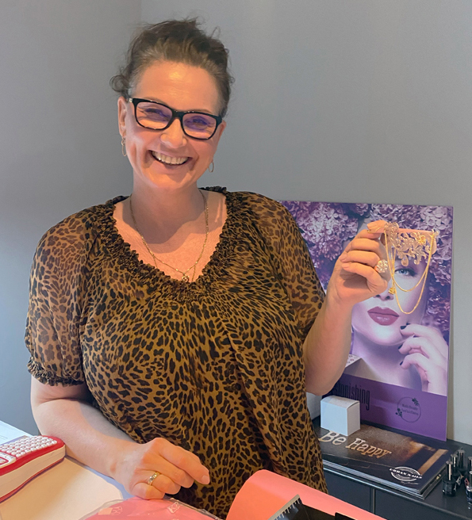
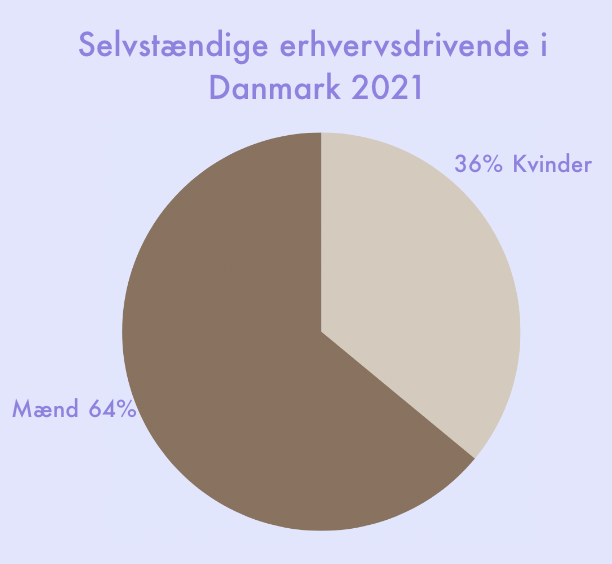
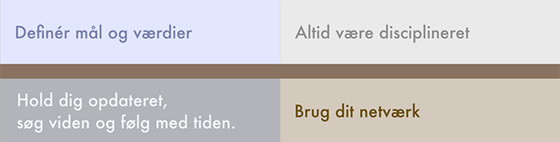

Jeanette fik idéen om at starte sin egen virksomhed, fordi hun ville gøre tingene anderledes og følge nogle andre retninger end de firmaer, hun havde arbejdet med igennem årene.
I 2010 blev hun distributør for det første brand, og i dag er hun distributør for tre brands og har et team af omkring 20 piger, som hun kalder et "proteam."
Teamet arbejder sammen om at få brandet ”Nails Beauty and Wellness til at blive kendt som virksomhed,
og de planlægger at starte et konkurrence-team, som skal konkurrere både i Danmark og internationalt.
Mød iværksætter Jeanette der stædigt fortsætter
med at indtage sin plads
Til dig der er blevet offer for en fortælling om at du ikke kan, eller ikke burde.
Til dig der vil udnytte dit potentiale. Forstå uligheden i erhvervslivet og læs en personlig
fortælling om Jeanettes op- og nedture som iværksætter i en benhård branche.
Det er 2023 og stadig den dag i dag, ser vi stor ulighed mellem mænd og kvinder på arbejdsmarkedet. Det kommer til udtryk på flere måder.
Vi ser statistik der tyder på ren og skær kønsmæssig lønforskel, derudover ser vi en betydelig underrepræsentation af kvinder i højere lederstillinger.
Vi ved også at kvinder bliver mere bedømt mere på deres personlige egenskaber og fremtoning, fremfor kvalifikationer og erfaringer.
Dette betyder at kvinder ofte bliver fravalgt, selvom de har samme eller endda flere kompetencer end mænd
Vi ser statistik der tyder på ren og skær kønsmæssig lønforskel, derudover ser vi en betydelig underrepræsentation af kvinder i højere lederstillinger.
Vi ved også at kvinder bliver mere bedømt mere på deres personlige egenskaber og fremtoning, fremfor kvalifikationer og erfaringer.
Dette betyder at kvinder ofte bliver fravalgt, selvom de har samme eller endda flere kompetencer end mænd
 En undersøgelse af Institut for Menneskerettigheder belyser derudover at der er en forskelsbehandling i ansættelsesprocessen,
hvor kvinder oftere bliver spurgt om familiesituation og planer om børn under jobsamtaler.
En undersøgelse af Institut for Menneskerettigheder belyser derudover at der er en forskelsbehandling i ansættelsesprocessen,
hvor kvinder oftere bliver spurgt om familiesituation og planer om børn under jobsamtaler.
"Danmark rangerer som nummer 29 ud af 156 lande på verdensranglisten over ligestilling mellem kønnene.
Hvorimod Danmarks nabolande alle ligger i top-5."
Hvorimod Danmarks nabolande alle ligger i top-5."
(KILDE: Argumenter imod kvinder og World Economic Forums)

Jeanette har været igennem møllen. Hun har som kvinde oplevet at man har en smallere sti at gå på. Hun har oplevet fordomme om hvordan man skal se ud og påføre sig som kvinde i skønhedsbranchen.
Hun har oplevet en mistroiskhed, når hun fortæller at hun er selvstændig indenfor negleteknik, hvilket har ført til at Jeanette den dag i dag gerne vil undgå at fortælle folk om hvilken branche hun arbejder indenfor.
Jeanette har oplevet på egen krop og været vidne til, at mænd med færre kompetencer end hende selv, stiger hurtigere i graderne.
Hun har tvivlet på sig selv, blandt andet pga. den hårde modstand og fordommene som hun har skulle stå til mål for.
“De er jo bare sådan nogle sminkedukker,
der ikke kan finde ud af andet.”
der ikke kan finde ud af andet.”
Jeanettes karriere
Jeanette er en kvindelig iværksætter, som er distributør for tre brands og ejer webshoppen Nails Beauty and Wellness.
Jeanette startede med at lave negle i 2002-2003 og er 4x Danmarks Mester i forskellige kategorier.
Hendes rejse indenfor skønhedsbranchen og negle mm. begyndte som en tilfældighed, da hun en dag tilbage i 2002 læste en annonce om at blive negleteknikker.


Fordomme om branchen
“De er jo bare sådan nogle sminkedukker, der ikke kan finde ud af andet.” Sådan beskriver Jeanette Ulriksen synet og fordommen på de såkaldte stereotyper, som arbejder indenfor skønhedsbranchen. Der kan i dag være den opfattelse, at skønhedsbranchen fokuserer for meget på ydre skønhed og ikke nok på indre værdier og kvaliteter.
Derudover kan der være en opfattelse af, at skønhedsbehandlinger og -produkter er dyre og unødvendige, og at personer, som bruger meget tid og penge på sådanne ting, er materialistiske og ikke realistiske. Derfor kan de ses som mindre intellektuelle personer.
Fordomme i branchen
Efter mange år på fronten som negleteknikker, besluttede Jeanette sig for at komme bagom i branchen.
Frustration mod administrationen, manglende respekt og indflydelse spillede en stor rolle i hendes beslutning om at blive selvstændig.
Hun fortæller, da hun arbejdede under et firma, at hun ikke måtte kommunikere med enkelte personer fordi de repræsenterede et andet mærke.
Jeanette besluttede sig derfor for at blive selvstændig, for at få indflydelse, gøre tingene på sin egen måde og tage sig af menneskerne i fronten, i arbejdet som negleteknikkere.

Jeanette fortæller hvordan hun er blevet rådet til at skjule hendes ellers flotte CV:
Fordommen om de mennesker som arbejder i skønhedsbranchen, er så slem, at hun er blevet bedt om at fjerne karriere og succes som
negleteknikker på hendes CV og Linkedin.
Jeanette udtrykker nærmere at det både er kvinder og mænd, dog flest mænd, som dømmer og holder stereotyp-skiltet over deres hovedet. Det har udviklet sig så grelt, at Jeanette og samtlige kvinder ikke fortæller om deres karriere i skønhedsverdenen, men blot nævner at de er har et ”distributionsfirma”, da man slipper for at skulle forklare sig yderligere.
”Det handler om at finde troen på sig selv. Kæmpe for sin plads som kvindelig iværksætter.
Og ja, der er plads til flere. Mange flere.”

Ifølge en rapport fra Erhvervsstyrelsen fra 2021 om kvinder i iværksætteri
udgør kvinder 36% af alle selvstændige erhvervsdrivende i Danmark.
Gode råd til dig der gerne vil være selvstændig
